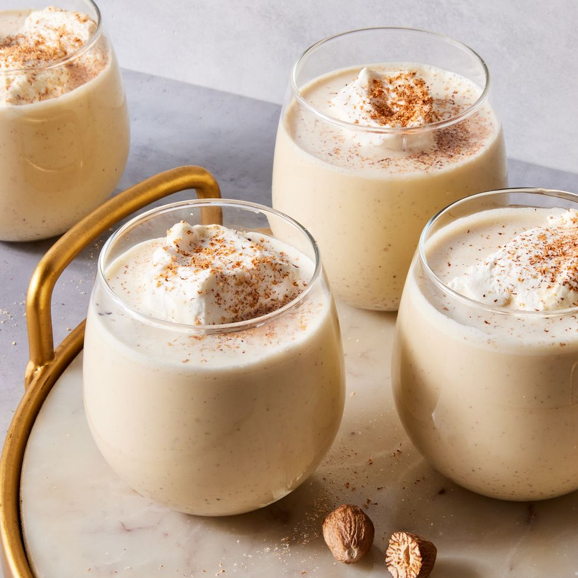

Homemade Eggnog

A homemade version of the classic holiday favourite
- 2 cups milk
- 1/2 tsp. ground cinnamon, plus more for garnish
- 1/2 tsp. ground nutmeg
- 1/2 tsp. pure vanilla extract
- 6 large egg yolks
- 1/2 cup granulated sugar
- 1 cup heavy cream
- 1 cup bourbon or rum
- Whipped cream, for serving
Steps
- In a small saucepan over low heat, combine milk, cinnamon, nutmeg, and vanilla and slowly bring mixture to a low boil.
- Meanwhile, in a large bowl, whisk egg yolks with sugar until yolks are pale in color. Slowly add hot milk mixture to egg yolks in batches to temper the eggs and whisk until combined.
- Return mixture to saucepan and cook over medium heat until slightly thick (and coats the back of a spoon) but does not boil. (If using a candy thermometer, mixture should reach 160º.)
- Remove from heat and stir in heavy cream and, if using, bourbon. Refrigerate until chilled.
- When ready to serve, garnish with whipped cream and cinnamon.